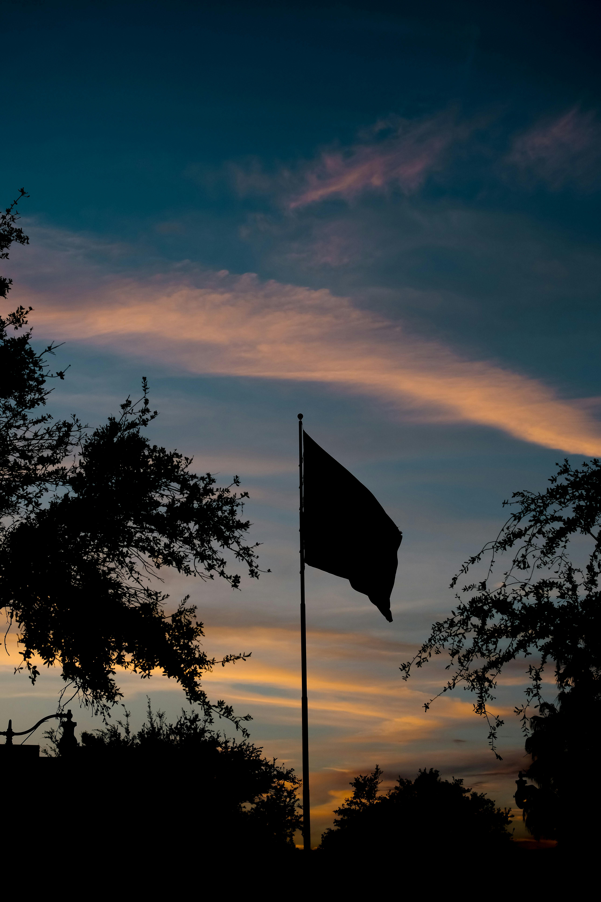

John Doe est un photographe passionné qui capture des images époustouflantes de la nature, des événements et des personnes.
Il a voyagé dans le monde entier pour capturer des moments uniques et les partager avec le monde.
Ses photos sont un témoignage de la beauté de la vie et de la diversité de notre planète.

Des palmiers pour une voyage haut en couleurs.

Un couché de soleil sur une nation blamboyante.

La mer comme seul horizon.

La mer comme grande source d'inspiration.
Services
John Doe Photography propose une gamme de services pour répondre à vos besoins en matière de photographie.
- Photographie de la nature
- Photographie d'événements
- Photographie de personnes
- Retouche photo